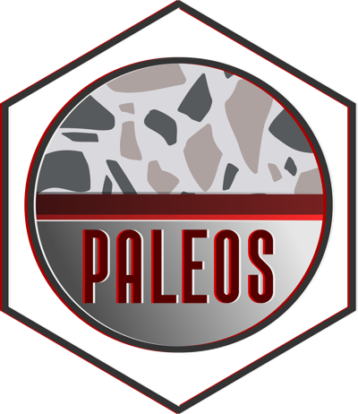

Most of my results come from codes I wrote and released openly, with documentation and archived versions so that others can reuse them. The first three below are codes I lead, and the others are listed at the end.

PALEOS
Lead developer · Python · 2026
PALEOS (Planetary Assemblage Layers: Equations Of State) computes the thermodynamic properties of iron, MgSiO₃, and water at the pressures and temperatures of planetary interiors. It covers five phases of iron, six of MgSiO₃, and the ice, liquid, vapor, and supercritical phases of water, selects the stable phase automatically, and returns the same seven quantities, from density to the adiabatic gradient, through one interface for every material.
Precomputed lookup tables, and mass–radius relations for rocky and water-rich planets, are archived on Zenodo and can be used without installing anything. PALEOS is the interior back-end of the PROTEUS framework.
ZEPHYRUS is the atmospheric escape module of the PROTEUS framework, started in the Forming Worlds Lab. Its released version computes energy-limited escape driven by stellar X-ray and ultraviolet light, with a tidal correction, and the fraction of an atmosphere lost in a giant impact.
I now lead its development and am rebuilding it around a regime dispatcher. Given the state of a planet, the dispatcher decides which of six escape regimes applies, from the boil-off of a young envelope through hydrodynamic and hydrostatic escape to Roche-lobe overflow, and splits the outflow over chemical species with a multi-species fractionation model. The first part of the rebuild is in review.
JADE (Joining Atmosphere and Dynamics for Exoplanets) follows a planet in a hierarchical three-body system, its star plus a distant companion, over billions of years. It integrates the secular dynamics to hexadecapolar order, including von Zeipel–Lidov–Kozai cycles, tides, the planet's rotation, and general-relativistic precession, together with the planet's layered structure and the photo-evaporation of its atmosphere.
I wrote it during my PhD in Geneva. It has been used in 11 studies to date.
PROTEUS: a modular Python framework for the coupled interior–atmosphere–orbit evolution of rocky and sub-Neptune planets, developed as a team effort by the whole Forming Worlds Lab and its collaborators, with me as a maintainer and major contributor.
TripleBHMergerPredictor: a Python-based neural network for predicting mergers in hierarchical triple black hole systems trained on ~ 15M secular simulations.